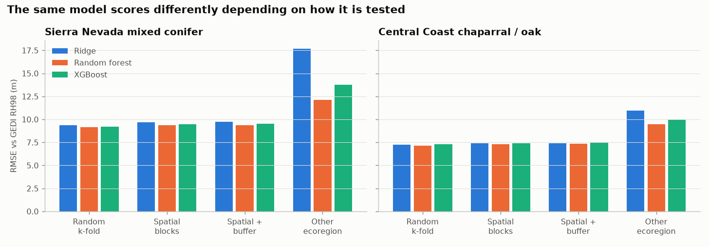
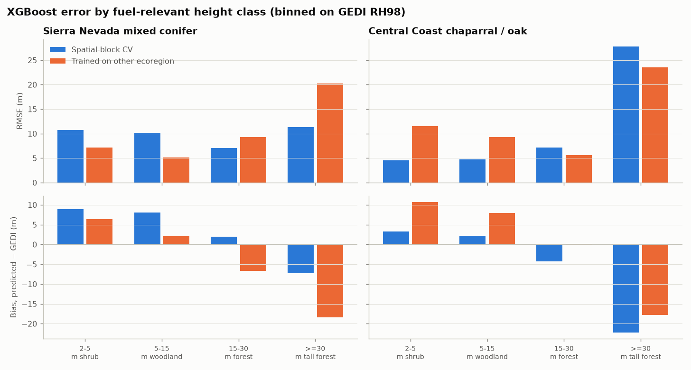
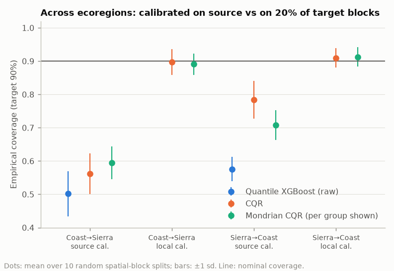

Canopy height is one of the structural layers fire-behaviour models need for crown fire. GEDI measures it directly, but only along sparse 25 m tracks, so a wall-to-wall map has to learn height from imagery and terrain. Everything then depends on how honestly that model is evaluated. This project asks the question a fuels product has to answer before anyone uses its maps: how wrong is it, where, and does its stated uncertainty hold somewhere new?
Setup
- Reference: 16,000 quality-screened GEDI L2A shots (RH98), 2019–2023, in two contrasting ecoregions: Sierra Nevada mixed conifer and Central Coast chaparral/oak. Shots in recently burned areas are dropped.
- Features: Sentinel-2 summer median composites (9 bands plus NDVI, EVI, red-edge NDVI, NBR, NDMI) with Cloud Score+ masking, and SRTM terrain. Coordinates are deliberately left out: the goal is a model that transfers, not one that interpolates between tracks.
- Models: XGBoost, random forest and ridge, with fixed hyperparameters (not tuned inside the evaluation folds).
- Evaluation: random k-fold, spatial-block k-fold (block size set by a variogram), spatial blocks with a 1 km buffer, and train-on-one-ecoregion / test-on-the-other. Errors broken down by height class and LANDFIRE vegetation type.
- Uncertainty: quantile XGBoost calibrated with conformalized quantile regression (CQR) and Mondrian CQR, checked over 10 repeated spatial splits.
- Built test-first: a synthetic test bed with known true heights, plus 42 offline pytest tests, verified the machinery before any real data was used.

What I found
Transfer is the dominant error. Within a region, random k-fold was only 2–3% optimistic versus spatial CV. But a model trained in the other ecoregion was 34–45% worse, with biases of 6–9 m.
Absolute elevation is what fails to transfer. The two regions barely overlap in elevation, so trees trained in one carry its height level into the other. Dropping elevation cut transfer RMSE by 20% (Sierra) and 9% (coast) at about 1% in-region cost. In-region CV alone would have kept the feature.
The fancy model was not the best one. Random forest beat XGBoost in every column, and ridge beat XGBoost on the coast. Within regions all three were within 4% of each other.

The errors sit where fuels matter. Tall coastal forest (≥ 30 m) is under-predicted by 22 m, and short vegetation inside the Sierra forest matrix (gaps, shrubs, young stands) is over-predicted by 8–9 m: exactly the ladder-fuel strata. GEDI also cannot see below about 2 m, so grass and low shrub cannot be validated with it at all.
Calibration restores honesty, not accuracy. Within regions, CQR gives 0.902 coverage for a nominal 90% interval, and Mondrian CQR fixes the per-region and per-height-class imbalance. In a new ecoregion, the same interval covers only 56%. Recalibrating on 20% of the target region's blocks restores coverage, but by widening intervals up to 2.4×.

What I'd tell a team shipping this map
- Report spatial-CV and cross-region numbers, never random k-fold alone.
- Replace absolute elevation with relative terrain measures for any model that must generalize.
- Shrub fuels need an independent reference (airborne LiDAR or field plots); GEDI alone cannot validate them.
- Where intervals break under transfer, the fix is local training data, and where to put it is a ground-truth design question.
I also checked the results against an earlier, independent real subsample (15,549 shots, only 1,550 shared): within-region metrics and coverage were stable; transfer RMSE moved by up to 1.6 m, so I read transfer numbers as ±1–2 m.